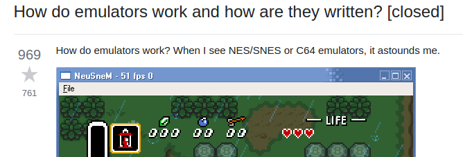

Introdução
TL;DR Pular para a parte interessante
Desde que tive meu primeiro computador (um 486) um dos meus maiores entretenimentos foi a capacidade de poder baixar e instalar emuladores e jogos para os mesmos. Era um universo muito amplo, ter acesso a qualquer jogo de plataforma (apenas a uma internet discada de distância rsrs), algo que pelo menos para minha realidade era algo intangivel com os poucos consoles físicos que tive.
O tempo passou e eventualmente ingressei no mundo da tecnologia como desenvolvedor de softwares, porém com esse advento a curiosidade sobre os emuladores aumentou, e uma curiosidade muito grande começou a surgir dentro de mim.
Como diabos um emulador funciona…
Curso sistemas de informação, e tive uma matéria de arquitetura de computadores, logo eu tinha entendido (muito pouco) como era o funcionamento de um computador, mas mesmo assim, era dificil compreender o que de fato consistia em um emulador. Nesse momento eu já havia trabalhado programando 2 anos em Java e estava começando a trabalhar com Javascript e Node.js, sabia que existiam emuladores no que rodavam no browser e estava mind blown com pequenas possibilidades como criar um servidor REST em 10 linhas de código e que javascript ia muito além do JQuery, pensei:
Já que roda no browser e é em JavaScript não deve ser dificil entender, tá pra mim! Vou começar por um fácil, NES…
Doce ilusão… lembro de ter acessado um repositório do Github (não tenho mais certeza de exatamente qual, mas acredito que seja esse: jsnes) e foi como se tivesse levado uma paulada na cabeça
|
|
Eu conhecia os operadores Bitwise (que até então eram conhecidos só como operadores lógicos) AND, OR, XOR, NOT que são os básicos que se aprende na faculdade, porém nunca são utilizados no mundo real das pessoas que amam a família. Porém >>, >>>, << fora o fato que o uso de usar hexadecimal só fazia me parecer ainda mais complexo o código. Obviamente como toda pessoa com muita motivação faria, eu larguei tudo de lado e achei que nunca mais olharia pro código de um emulador de novo.
Até que um dia eu esbarrei com essa pergunta do stackoverflow:

Nas respostas é possivel ter um amplo panorâma sobre o que de fato é a programação de um emulador, com vários links de referência muito interessantes. Nesse ponto, estava bem claro para mim que apesar de eu ter algum conhecimento em javascript, havia um déficit em como realmente um computador funciona, seja ele emulado ou não. Vendo isso percebi que seria uma ótima forma de ter vários ganhos:
- Eu aprenderia low-level e arquitetura de computadores na prática
- Eu estaria mechendo com emuladores
- Consolidaria conhecimentos em JavaScript
Para quem é essa série
Para acompanhar a série é importante um background mesmo que básico em programação, durante todo o processo usaremos JavaScript, porém tirando a parte de renderização todo o resto é facilmente portado para qualquer linguagem, conceitos como operações bitwise serão explicadas no decorrer do tutorial. Não é necessário ter conhecimento em emuladores ou em baixo nível (como assembly), alguns conceitos serão explicados durante o tutorial, e alguns serão linkados para outros artigos. E principalmente ter curiosidade para tirar dúvidas e ir atrás de outras fontes de informação.
O que é um emulador
Segundo a definição do Wikipedia:
Em computação, um emulador é um hardware ou software que possibilita um sistema computacional (chamado de host) se comportar como outro sistema computacional (chamado de guest).
Continua…
ABOUT BRUNO VENTURA
A passionate developer interested in Javascript, Security, Backend and DevOps. Cofounder of CTF-BR group.